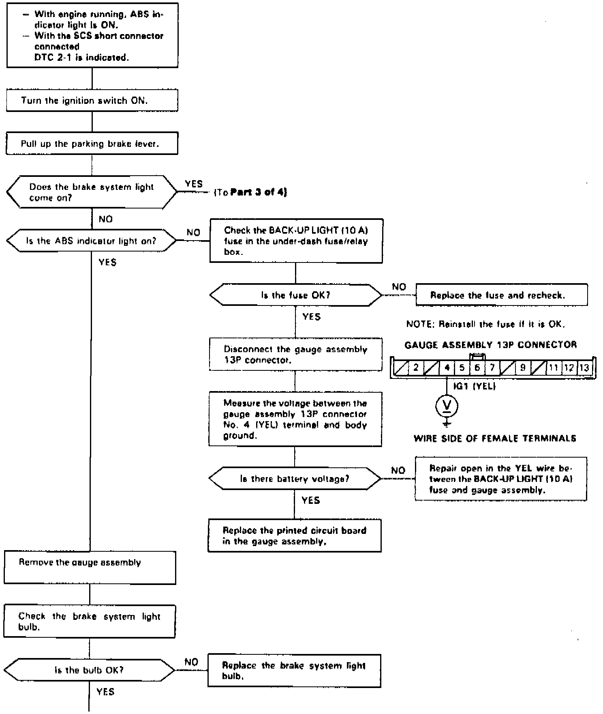
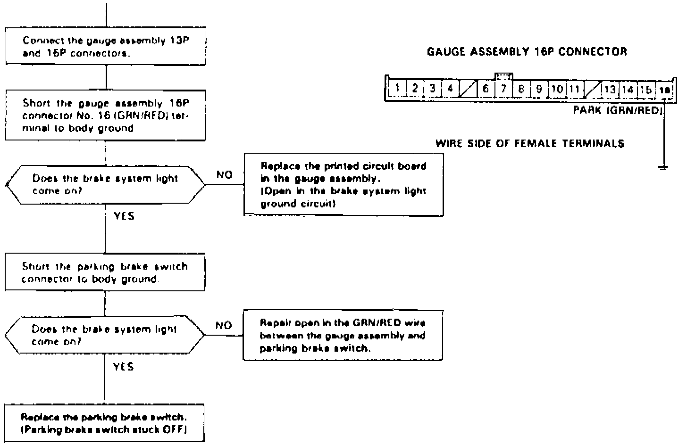
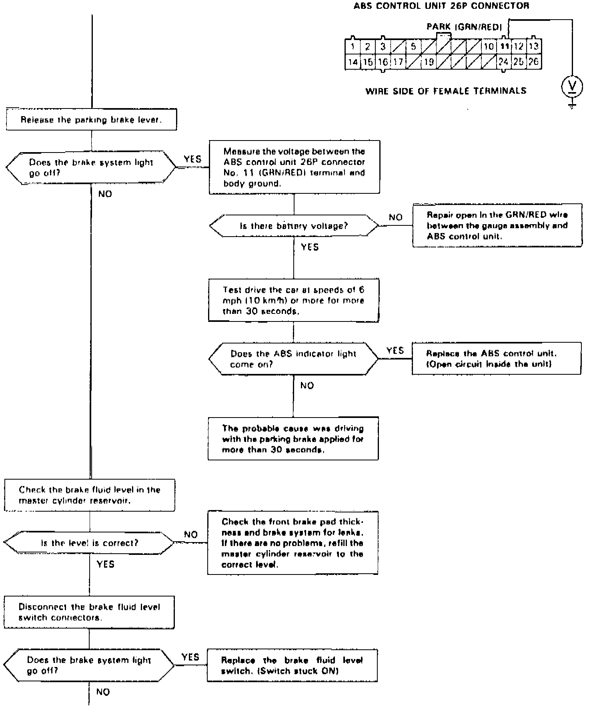
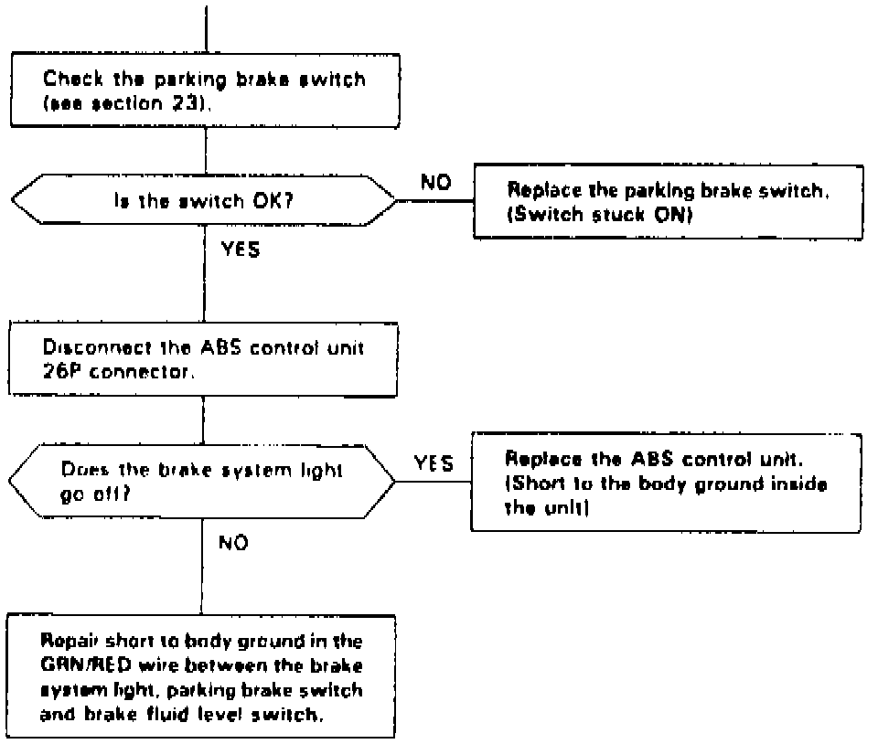

DTC 2-1
Fig. 32 Code 2-1: Parking Brake Diagnosis (Part 1 Of 4):

Fig. 32 Code 2-1: Parking Brake Diagnosis (Part 2 Of 4):

Fig. 32 Code 2-1: Parking Brake Diagnosis (Part 3 Of 4):

Fig. 32 Code 2-1: Parking Brake Diagnosis (Part 4 Of 4):

Diagnostic Trouble Code (DTC) 2-1: Parking Brake Diagnosis
The ABS control unit monitors the parking brake signal during the regular diagnosis (during driving). It turns the ABS indicator light on if it detects the parking brake ON signal for 30 seconds.
Possible causes:
- Driving with the parking brake applied
- Low fluid level in the master cylinder reservoir
- Open circuit between the BACK-UP LIGHT (10 A) fuse and brake system light
- Blown brake system light bulb
- Open circuit or short to body ground between the brake system light and ABS control unit
- Parking brake switch stuck ON
- Short to body ground between the brake system light and parking brake switch
- Brake fluid level switch stuck ON
- Short to body ground between the brake system light and brake fluid level switch
- Faulty ABS control unit